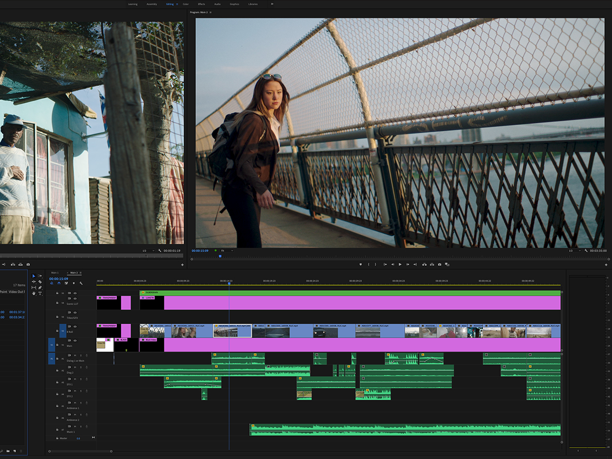

Creative Cloud 소개
Creative Cloud는 사진, 디자인, 비디오, 웹 및 UX 작업에 필요한 20개
이상의 데스크탑 앱 및 모바일 앱과 다양한 서비스를 제공합니다.
iPad에서 Photoshop을 사용하여 창의적인 아이디어를 자유롭게 표현하거나, Fresco를 사용하여 드로잉 및 페인팅하고 3D 및 AR용으로 디자인할 수 있습니다.
글로벌 크리에이티브 커뮤니니티에 참여하여 더욱 멋진 작품을 만들어 보십시오.
iPad에서 Photoshop을 사용하여 창의적인 아이디어를 자유롭게 표현하거나, Fresco를 사용하여 드로잉 및 페인팅하고 3D 및 AR용으로 디자인할 수 있습니다.
글로벌 크리에이티브 커뮤니니티에 참여하여 더욱 멋진 작품을 만들어 보십시오.
Photoshop
그래픽 편집, 어려운 일이 아닙니다!
Adobe Photoshop에서 합성부터 디지털페인팅
색감 보정, 애니메이션, 그래픽디자인 까지 모두
실현이 가능합니다. Photoshop과 함께 무한의
창의력을 발휘하여 보세요. 당신의 상상력을
자유롭게 펼치는데 있어 Photoshop은 없어서는
안될 크리에이티브 툴입니다.
Adobe Photoshop에서 합성부터 디지털페인팅
색감 보정, 애니메이션, 그래픽디자인 까지 모두
실현이 가능합니다. Photoshop과 함께 무한의
창의력을 발휘하여 보세요. 당신의 상상력을
자유롭게 펼치는데 있어 Photoshop은 없어서는
안될 크리에이티브 툴입니다.
자세히 보기


Illustrator
벡터 기반의 이미지를 쉽게 만들어보아요!
Adobe Illustrator에서는 벡터 기반의 이미지를
제작할 수 있어 플랫 그래픽 이미지 혹은 로고나
아이콘을 만들 때 유용하게 쓰이는 어플리케이션입니다.
수백만 명의 디자이너와 아티스트가 업계 표준의 벡터 그래픽
소프트웨어를 사용하여 멋진 웹 및 모바일 그래픽부터
로고, 아이콘 등. 다양한 콘텐츠를 제작하고 있습니다.
Adobe Illustrator에서는 벡터 기반의 이미지를
제작할 수 있어 플랫 그래픽 이미지 혹은 로고나
아이콘을 만들 때 유용하게 쓰이는 어플리케이션입니다.
수백만 명의 디자이너와 아티스트가 업계 표준의 벡터 그래픽
소프트웨어를 사용하여 멋진 웹 및 모바일 그래픽부터
로고, 아이콘 등. 다양한 콘텐츠를 제작하고 있습니다.
자세히 보기
PremierePro
표현하고 싶었던 영상이 있나요?
Adobe Premiere Pro에서 나만의 영상을
편집해보세요. 스마트한 툴로 개성있는 영상을
만들 수 있습니다. Premiere Pro는 영화, TV,
웹에 최적화된 동영상 편집 소프트웨어로
크리에이티브 툴, 다른 앱 및 서비스와의 통합으로
세련된 영화나 동영상으로 만들 수 있습니다.
Adobe Premiere Pro에서 나만의 영상을
편집해보세요. 스마트한 툴로 개성있는 영상을
만들 수 있습니다. Premiere Pro는 영화, TV,
웹에 최적화된 동영상 편집 소프트웨어로
크리에이티브 툴, 다른 앱 및 서비스와의 통합으로
세련된 영화나 동영상으로 만들 수 있습니다.
자세히 보기
